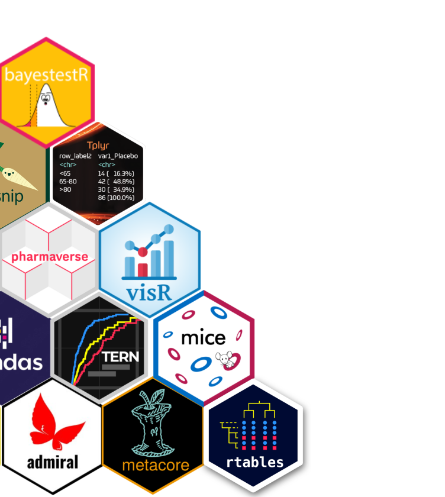
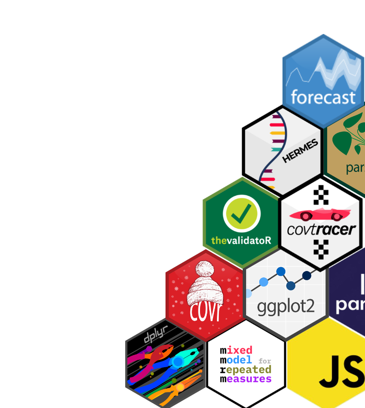
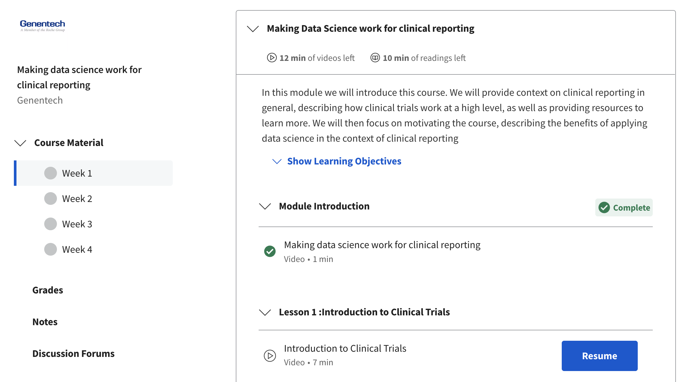

Our mission:

R/Pharma conference is a relatively small, scientifically & industry oriented, collegial event focused on the use of R in the development of pharmaceuticals.
The first conference took place in 2018, as an in-person event hosted by Harvard. During Covid-19, the conference moved to be online, and grew in participation to more than 1,500 data scientists from the pharma world with a passion for using R.
The conference is free to attend, and all hosting costs are met by contributions by Pharma companies.
Two task forces have been started by Open Source in Pharma to support the R/Pharma conference community.
OS in Pharma supports the release of Credly certifications to individuals that attend a conference workshop.
We have supported Roche / Genentech release the first online course specifically targeted at bridging the world of data science, with the world of data science for regulatory reporting.
This has led to the Genentech course on Coursera called ‘Making data science work for clinical reporting’.

Open source in Pharma provides governance over three Github Organisations.